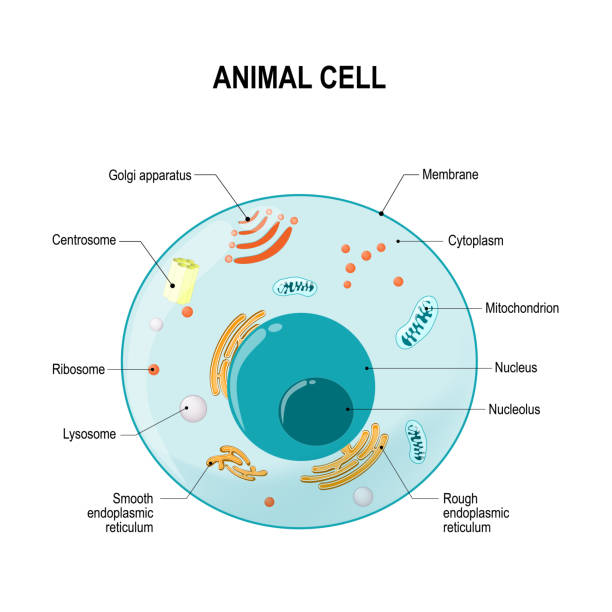

Tissue is an assembly of similar cells that together carry out a specific function.
The English word "tissue" derives from the French word "tissu",
the past participle of the verb tisser, "to weave".
Biological organisms follow this hierarchy:
Cells
Tissue
Organ
Organ System
Organism
Classification of Tissues:
Animal Tissues:

Animal tissues are grouped into four basic types: connective, muscle, nervous, and epithelial.